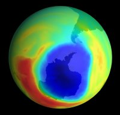

The hole ozone story
The “hole in the ozone layer” is one of society’s catch phrases. But do we as the public really understand what’s meant by it? How is the ozone hole formed? Why is it such a problem now? Is it even relevant? My aim in this article is to clear up some of the misunderstandings about the hole issue.
First we need to understand some background information. Ozone is formed by the sun’s ultra-violet (UV) radiation breaking up oxygen molecules (O2) to form oxygen atoms (O); these oxygen atoms react with other oxygen molecules to form ozone (O3). The ozone then absorbs uv radiation to return to O and O2. (Ozone can also break up and form O2 by reacting with free oxygen atoms.)
These reactions happen over and over, forming and destroying ozone. The whole process is important because the uv radiation that ozone absorbs is very damaging to living creatures, and this is the major atmospheric process that absorbs it.
Twenty years ago, however, scientists recorded that ozone was being destroyed faster than they had expected. There was some kind of competing reaction going on. But they soon discovered the culprit: chlorine. Specifically, it was chlorine coming from CFCs (chlorofluorocarbons – compounds that contain both chlorine and fluorine). The CFCs are transported into the stratosphere (about 20 km above the earth), where UV radiation breaks them down and releases chlorine. Some of the chlorine starts to break down ozone; the rest reacts quickly with other compounds in the stratosphere to form hydrochloric acid and chlorine nitrate, which do not react with ozone.
These reactions are common throughout the world. But when we consider the polar regions, there are a couple of peculiar features that change the process. We will look specifically at Antarctica because it is the most relevant to us here in New Zealand.
First, during winter, the polar atmosphere is almost isolated from the surrounding air. This is due to the polar vortex wind from the higher stratosphere bringing down very cold air. The isolation allows chemicals to build up without mixing outside the vortex.
Second, because it’s extremely cold (about –80C), polar stratospheric clouds are able to form. These are clouds made up of nitric acid and water. As they form they lower the concentration of nitrates, allowing a build-up of chlorine. Hence, just before the first sunrise of the new spring, the concentration of chlorine is very high.
As the first sunrise comes, there is enough UV radiation to break the chlorine bond and form chlorine atoms. These atoms react with ozone to form chlorine oxide. When enough chlorine oxide is produced it can combine to form a molecule of two chlorine oxides (Cl2O2), which reacts with the ozone and destroys it rapidly. This continues for about two to three months, forming the hole in the ozone layer.
By the end of November the polar vortex breaks up and the air warms up, allowing the clouds to dissolve. The nitrates can again react with chlorine to form unreactive chlorine molecules, and the ozone regenerates, causing the hole to close up.
The hole implodes, and the ozone-less air cascades out from the polar regions over our beloved New Zealand, giving us very little UV protection in early summer. This leads, of course, to very short burn times and high skin cancer rates.
As you can see, the ozone hole is specific to the polar regions, so no ozone hole should sprout up above us – at least anytime soon.
But where does that leave us? I believe the ozone hole is a strong warning. God has created an atmosphere that is very finely tuned, and even (for example) the relatively small increases in CFCs can have a big impact on our environment. Also, we have looked here at only the “ozone hole”, which is specific to Antarctica; the other worrying problem is a general depletion of ozone over Europe and North America. That, however, is a different story!